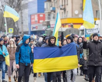
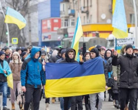

Україна
після перемоги
Ми незламний народе великої країни!Ми пишаємось нашим минулим, цінуємо те, що маємо,та готуємось до нашого спільного грандіозного майбутнього, яке обов’язково настане після перемоги!
Отримати патріотичний стікер


Саме козаки були авторами та реалізаторами ідеї української держави та її легіти мації у міжнародній спільноті як незалежної держав

Відвага, вірність, здатність до самопожертви, любов до Батьківщини - такі характеристики успадкував український народ у козаків
Турецький літописець Наїма писав про запорожців: Можна впевнено сказати, що неможливо знайти на цілій землі сміливіших людей, які так мало б дбали про мвоє життя і так мало боялися смерті"
Блакитне небо на прапорі України та жовте жито, ще одна ознака нашого прагнення думками відірватися від землі та полетіти в безкрайнє небо, вийти за межі простору.
Саме тому українці реалізовували прагнення вийти за межі за допомогою розвитку авіаконструкторських заводів.
Підприємство "Антонов створило гордість України, який став сиволом українського непереможного духу Мрію найбільший транспортний літак у світі.


 



"Вчора ми втратили, на жаль, нашу Мрію". Але стару Мрію". А нову ми зараз будуємо. Слава Україні!"

 Я хочу щоб Україна почала більше прибавляти в екології, в медецині, в освіті. І хочу щоб всі українці були в кращому фізичному стані, щоб розмовляли українською мовою та не вживали росіянізми.
Я хочу щоб Україна почала більше прибавляти в екології, в медецині, в освіті. І хочу щоб всі українці були в кращому фізичному стані, щоб розмовляли українською мовою та не вживали росіянізми. На мою думку в країні найголовніше це освіта, того що без освіти не буде інших сфер медицини, екології, хімічної промисловісті, енергетики, та найголовніше безпеки внутрішньої та зовнішньої.
На мою думку в країні найголовніше це освіта, того що без освіти не буде інших сфер медицини, екології, хімічної промисловісті, енергетики, та найголовніше безпеки внутрішньої та зовнішньої. Нова Україна - це має бути нове майбутнє, з екологію та з технологіями. Процвітання квіток, полей, люди ходять працювати, навчатися та занімаютися спортом.
Нова Україна - це має бути нове майбутнє, з екологію та з технологіями. Процвітання квіток, полей, люди ходять працювати, навчатися та занімаютися спортом. 
Україна зможе зформулювати свої ціннісні орієнтири та транслювати їх на весь світ, а саме: Можливо все, навіть те, у що ви не вірите! А вихід за рамки самого себе - це більш гуманістично, ніж постійно прагнути вийти за рамки технологічного розвитку

Українці, як нація, стають зразком волевиявлення та прикладом побудови демократичних відносин не ”згори донизу”, а “знизу догори”!

Україна стає найбільш популярним та поширеним символом свободи, віри, правди та сміливості у всьому світі. Все буде Україна!

Україна запрошує до першого в світі проекту колективної відбудови країни, в якій будуть задіяні ініціативи різних країн світу. Таким чином Україна дає можливість всьому світові відчути, що таке колективна стратегія та транслює нову етику відносин в світі

Україна згадає про своє прагнення до неба та сонця, й запропонує новий проект: щоб закінчити війни на Землі, давайте будемо співпрацювати для нашого нового життя в космосі